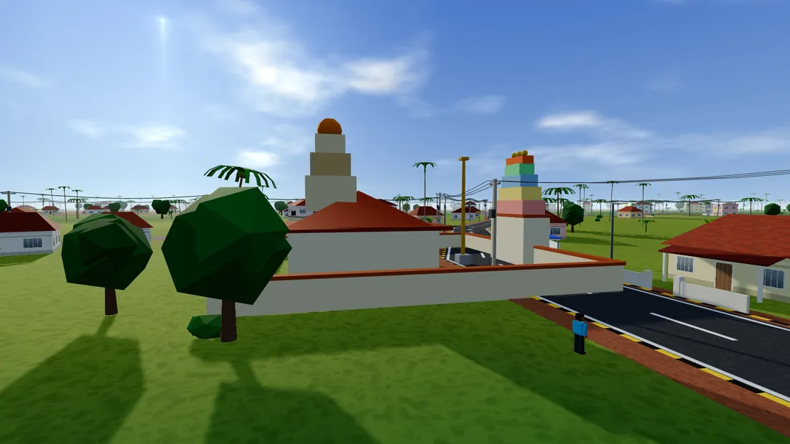
Six story missions
Welcome Home, Goli Baje Express, Conductor Saab, The Mallige Thief, Kere Evening, Bahubali Calling. Voiced scenes in Kannada, Tulu or English, with an ending worth the climb.
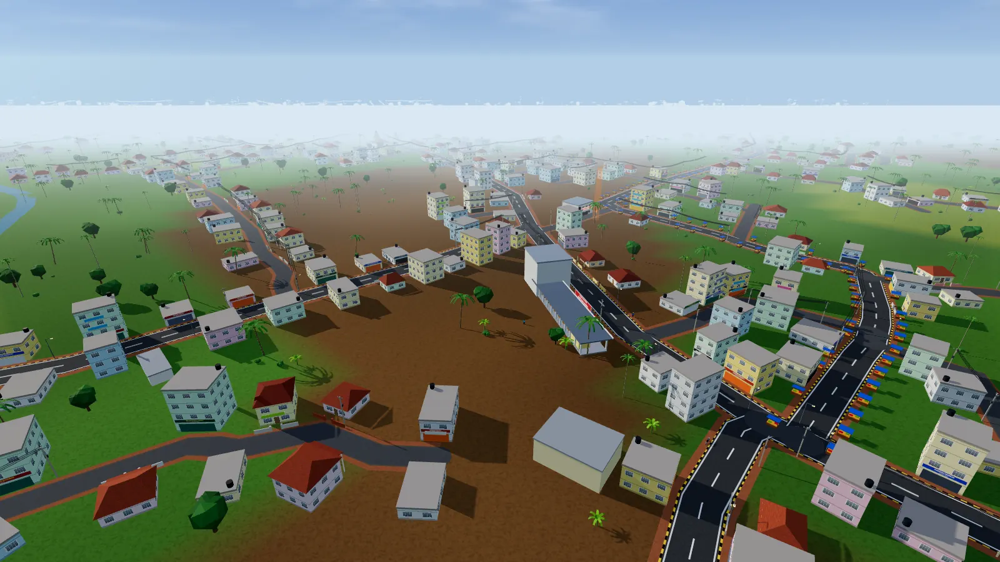
Ride Ajja's old scooter, drive the private bus, catch a Pili Vesha troupe at the maidan, win a Kambala race and eat goli baje in the rain. Press play and you are on Bahubali Betta tonight.
Seventy-five seconds, filmed inside the game: sunrise at the bus stand, the temple street, rain on Aanekere, a police chase, a night over the lake and Bahubali at dawn.
All music in the trailer is composed for the game. Credits
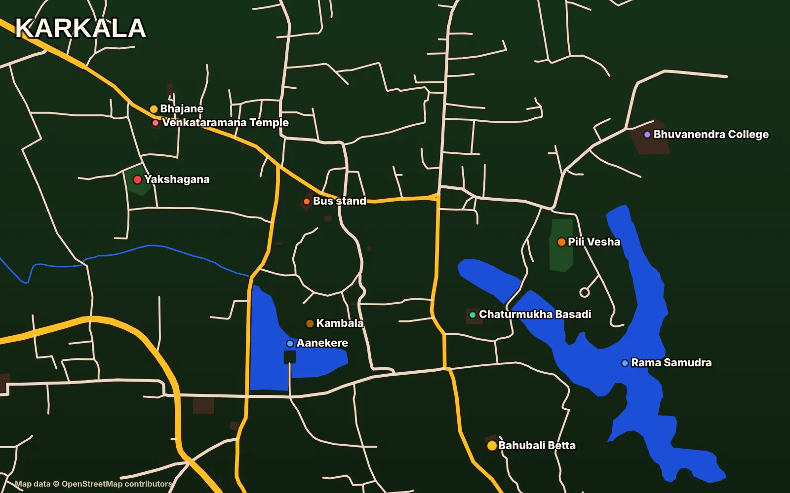
The road network, lakes, temples, banks, hotels and colleges come from OpenStreetMap, then get a coat of laterite red, Mangalore tiles and a lot of coconut palms.
No dates, no promises. Vote for the next place below. Map data © OpenStreetMap contributors.
A town to live in, not a level to finish.

Welcome Home, Goli Baje Express, Conductor Saab, The Mallige Thief, Kere Evening, Bahubali Calling. Voiced scenes in Kannada, Tulu or English, with an ending worth the climb.
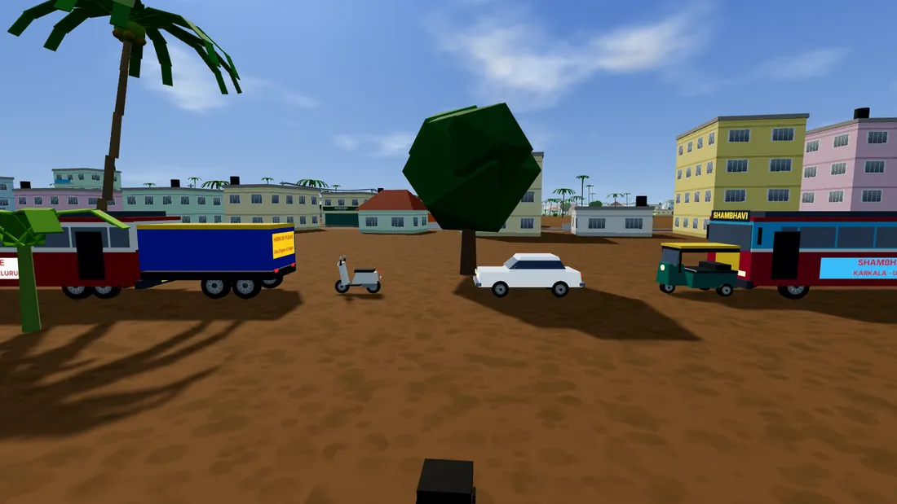
Sixteen vehicles and every one drives: cycle, scooter, bullet, auto, Omni, SUV, tempo, lorry (HORN OK PLEASE), tanker, tractor, 108 ambulance, three kinds of bus. Traffic keeps left. Cows do not keep anywhere.
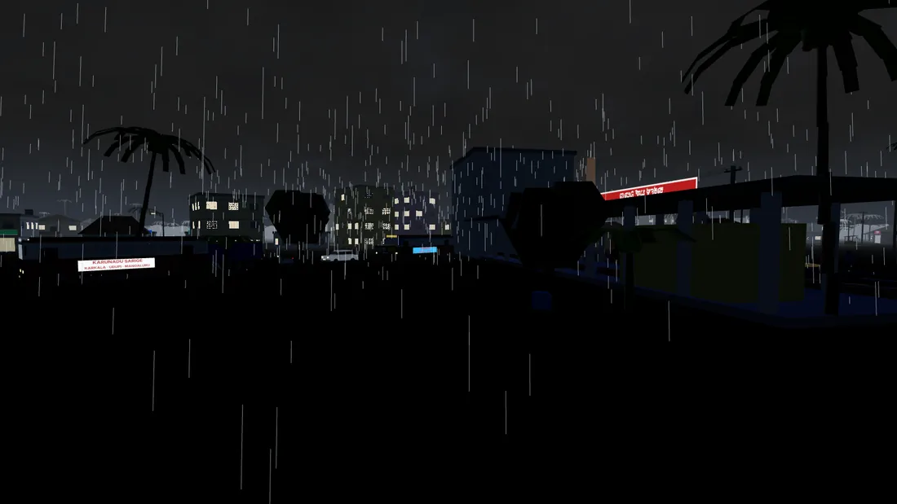
One real second is one game minute. Dawn bells, hot noon, a golden evening, then rain that makes the roads shine. Rain deliveries pay 30% extra.
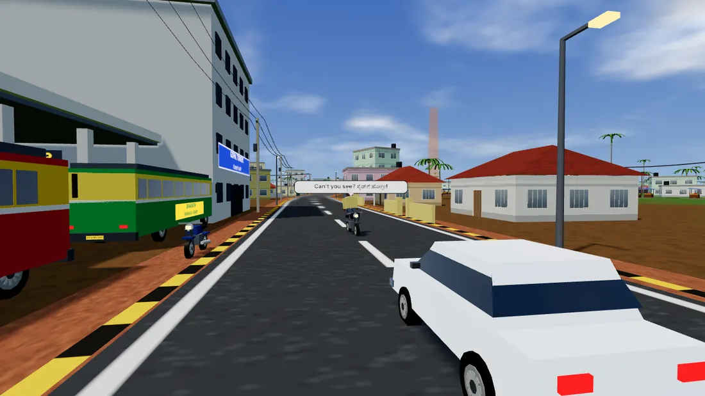
Drive down the middle, nearly flatten someone or lean on the horn and the street answers in a Hinglish, Kannada and Tulu mix: “Nikk kann ijjaa? Can't you see, bhai?”
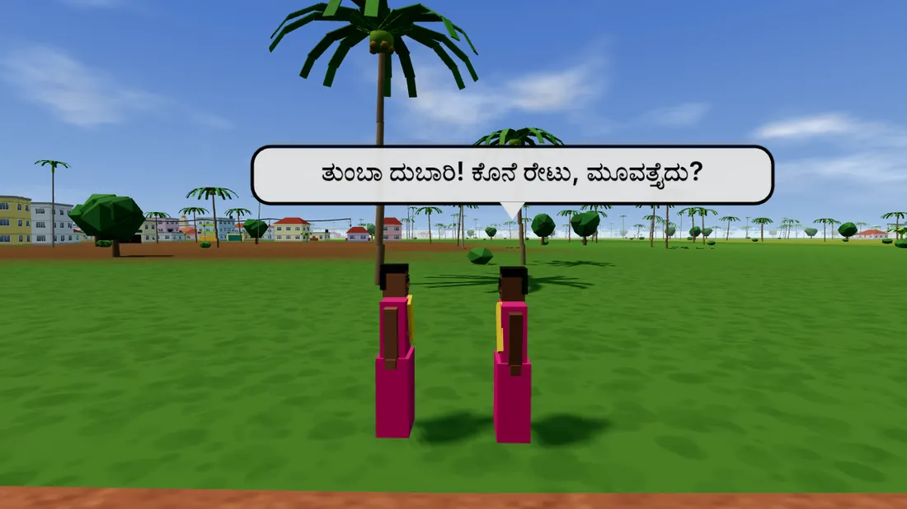
Uncles at the bus stand, aunties haggling over mallige, students dodging internals, fishermen at Aanekere. Walk close and the speech bubbles start.
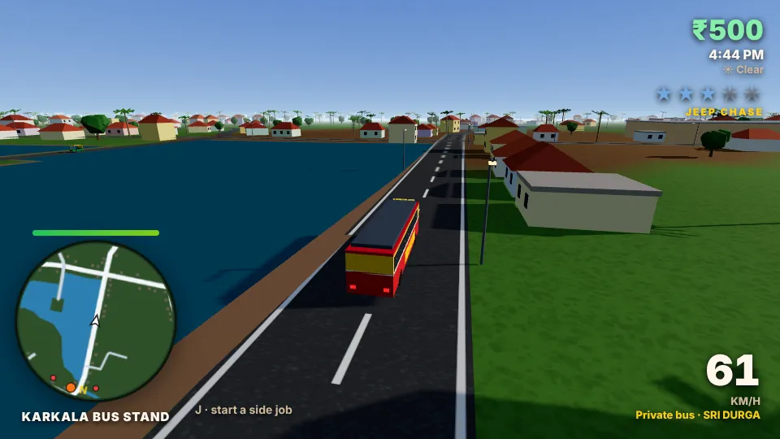
Gossip, fine, jeep chase, checkpost, front page. The police follow the real roads. Photo mode on O and Enter saves a picture for the family group.
Four shows run on their own schedule (game clock). Follow the drums, or the toast that tells you where. Music gets louder as you walk up, and the lyrics appear on screen.
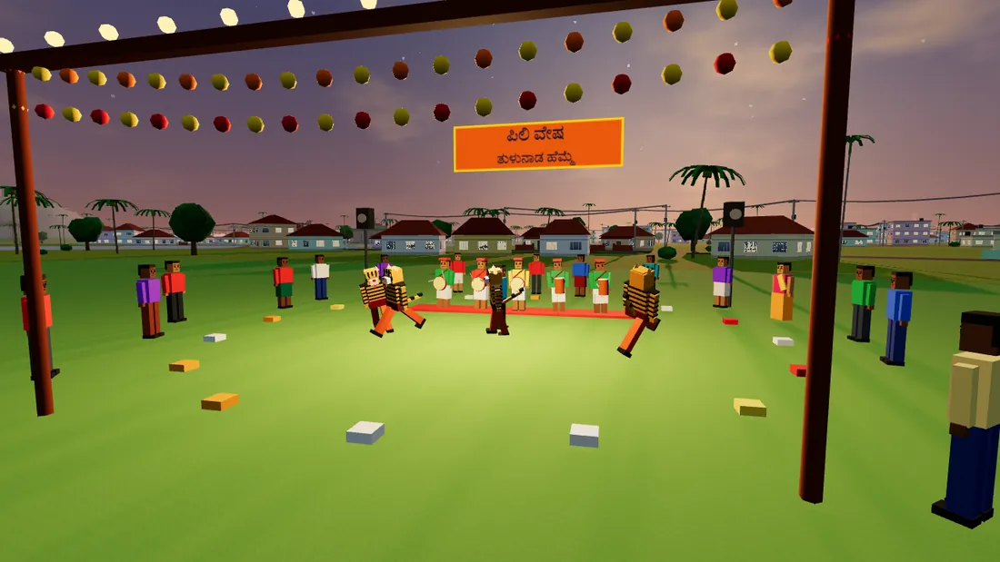
Painted tigers, tasa and chende drummers, a marigold arch and a crowd that jumps when the tigers do.
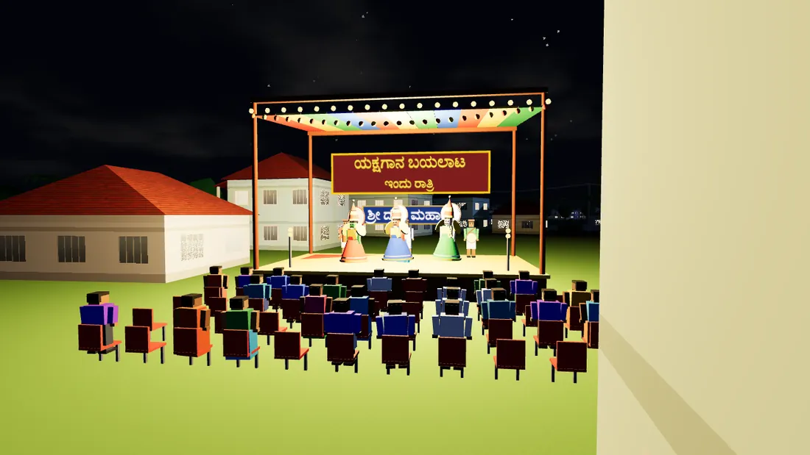
A bayalata stage under a cloth canopy: crowned kings spinning in layered skirts, the chende and maddale answering each other, plastic chairs filled with serious critics.
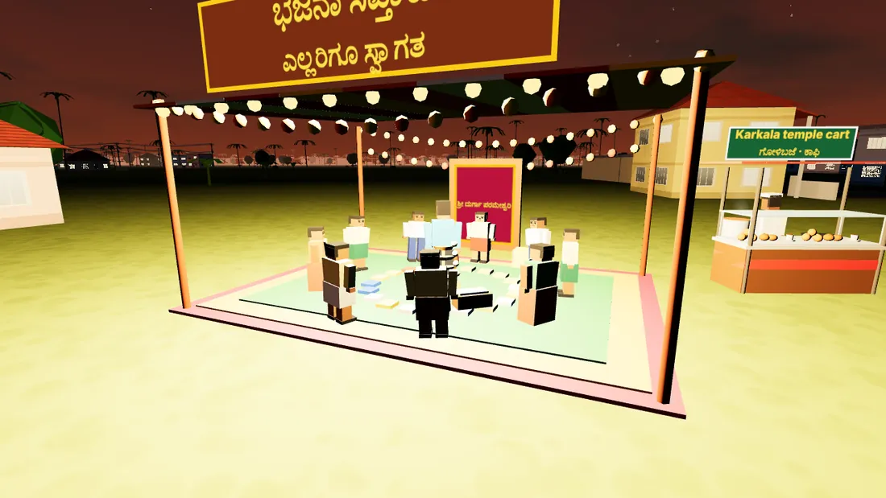
A circle of singers round a brass nilavilakku, harmonium and tabla, jhanj keeping time, heads swaying together. Hari Om.
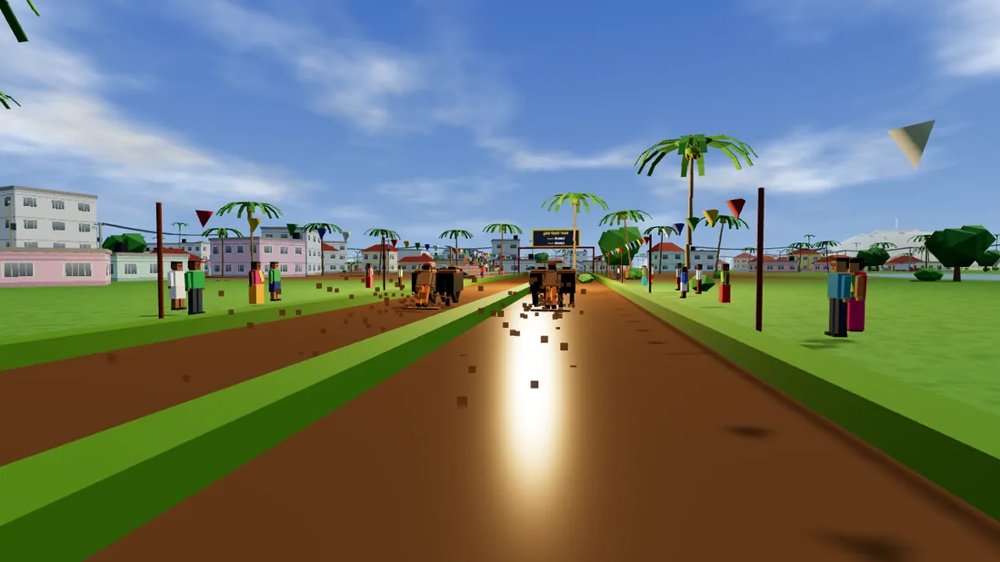
Twin buffaloes, a runner on the plank, flying mud and a scoreboard in Kannada. Stand at the finish line and hear the whole village shout.
Get into any bus, auto, car, tempo or lorry and the radio comes on. Press R to change station. Every track is original, written for the game with chenda, tassa, nadaswaram, harmonium and a sung vocal line in Tulu, Kannada or English, so there is nothing to license.
Vocals are synthesised, so they sound like a stylised vocalist rather than a person. Tulu lyrics are a draft; if you speak Tulu and want to improve them, write in.
Tiffin hotels, lunch homes and street carts have steaming counters. Walk up, press F and pick: it costs a few rupees and fixes your health.
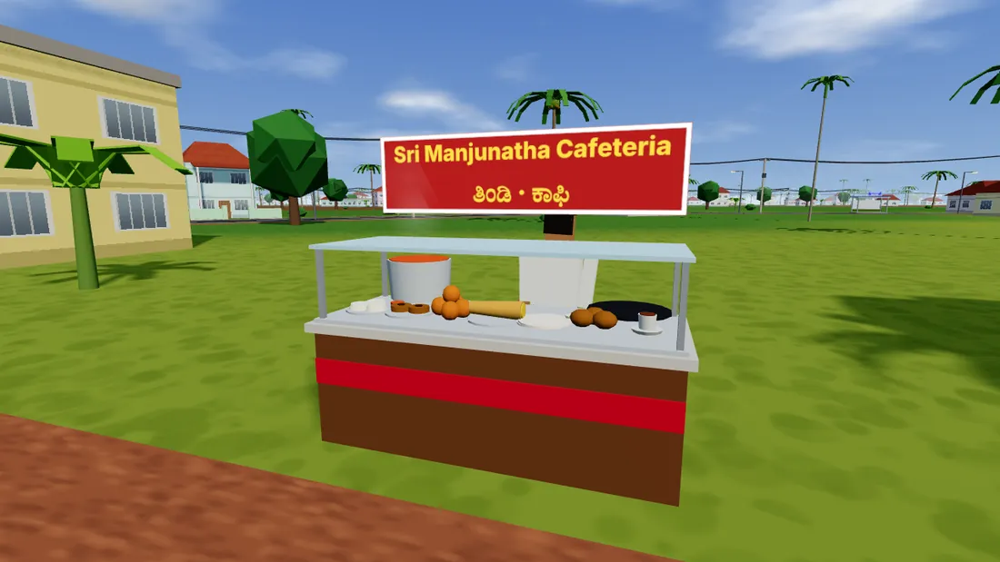
Same words work in the game. On the site they just change the weather.
BARSAIt starts raining on this pageIRULUNight falls on the siteBELAKUMorning lightSURYAClears the skyBUSBEKUA private bus crosses your screenGOLIBAJEIt rains goli bajeThe game has more codes than these. Find them.
Any laptop or desktop with a keyboard. On a phone? Use Send to my laptop above.
The first visit downloads the town once, so give it a minute. After that it opens in seconds.
Progress saves in your browser. No account, no password, no OTP.
This is a first draft, made to see whether people want it. Tell us which place to build next, and whether you would play on laptop or phone.
Namma Karkala is made by one indie developer, so every report helps. Include your laptop and browser.